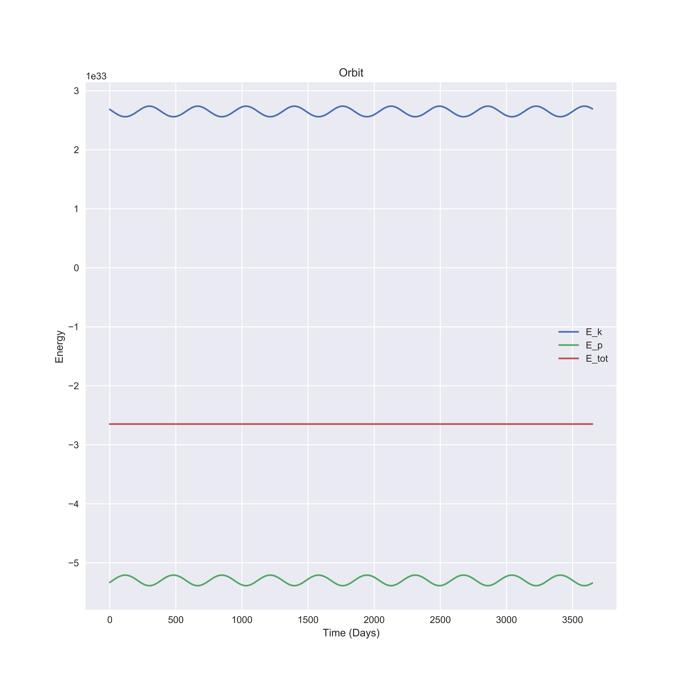

name: inverse layout: true class: center, middle, inverse --- # The Orbit of the Earth <p style="text-align:right">Provided by <b>Tae Geun Kim</b></p> --- layout: false # Table of Contents <br><br><br> 1. Algorithm 2. Introduce OOP 3. Process 4. Results --- template: inverse # Algorithm --- layout: false .left-column[ ## Euler's Method ] .right-column[ * The Simplest approximation Method * For small steps, it's effective. * But error is $\mathcal{O}(h^2) \quad \Rightarrow $ So Big Error! \begin{align} v(t+h) &\simeq v(t) + h\frac{dv(t)}{dt} = v(t) + ha(t) \\\ r(t+h) &\simeq r(t) + h\frac{dr(t)}{dt} = r(t) + hv(t) \end{align} ] --- .left-column[ ## Step by Step ] .right-column[ 1. Since $r_1, r_2$ are given, first find initial velocity 2. For given $r$, we can calculate acceleration by Newton's Law $$ F = G\frac{Mm}{r^2} $$ 3. If $a$ is determined, then we can obtain $v, r$ 4. Repeat ] --- template: inverse # Introduce OOP --- .left-column[ ## What is OOP? ] .right-column[ <img src="Fig/OOP_engine.png" width="600" height="350"></img> <p style="text-align:right" >(Reference: Wishket Blog)</p> ] --- .left-column[ ## What is OOP? ## Coffee ] .right-column[ </img> <p style="text-align:right" >(Reference: WooWaBros Blog)</p> ] --- .left-column[ ## What is OOP? ## For Scientists? ] .right-column[ <a href="https://www.physicsforums.com/threads/is-object-oriented-programming-unnecessary-for-scientific-applications.218094/">Ref</a> (...) **Scientists (excluding computer scientists, of course) are some of the worst programmers on the face of the planet**. They are even worse than engineers (excluding software engineers, of course). Scientists are trying to solve a problem. The quality of the code and the sophistication of the techniques used to write the code are of tertiary importance. (...) Scientists continue to use Fortran and C because that is what they learned as a graduate student. Learn a new language? Why bother? (...) Write once, run once, use the results in a paper, done. In their defense, why should scientists care about the quality, maintainability, readability, portability, etc of this throwaway code? A silly mantra of the 80s/90s was "quality is free". It is not free. (...) The techniques applied to solve one problem can help in solving the next problem. (...) It is still worthwhile to learn object-oriented techniques. There will be times when you find them to be incredibly useful, even in the domain of scientific programming. ] --- .left-column[ ## What is OOP? ## For Scientists? ] .right-column[ * In my research : * Mathematica : 300 Lines of Code, 2 hours to run (Can't use Work Station - Too expensive) * Python : 220 Lines of Code, 1.5 hours to run * Cython : 256 Lines of Code, 40 minutes to run (Compiled C file contains 28000 lines of code) * Go : 200 Lines of Code, 2 minutes to run * We can reduce codes by Object-Oriented Programming and even get shorter times .footnote[.red[*]Python is not much faster than Mathematica. The Reason of shorter runtime is caused by changing Algorithm- OOP] ] --- template: inverse # Process --- .left-column[ ## Process ## Make Type ] .right-column[ ```Go type Vector struct { x, y, z float64 } type VList struct { R [N + 1]Vector } ``` * Basic Idea 1. $r, v, a$ - instances of Vector 2. Easy to obtain anything by define method ```Go func (v Vector) Mul(f float64) Vector { q := Vector{0, 0, 0} q.x, q.y, q.z = v.x*f, v.y*f, v.z*f return q } func (V *VList) Assign(v Vector, i int) { V.R[i] = v } ``` ] --- .left-column[ ## Process ## Specific ] .right-column[ 1. Make empty List (VList : which component is Vector type) 2. Initialize two coordinates and Assign them to Coordinate VList 3. Use ``` En(r, v)```, evaluate potential and assign them to Potential VList 4. Start for loop! First obtain acceleration 5. Obtain velocity : we can find velocity difference -> Guess real v2 & v1 6. Assign velocity to Kinetic Energy VList 7. Repeat 10 years and re-initialize by last two coordinates and reverse rotate for 10 years ] --- template: inverse # Results --- layout: false .left-column[ ## Results ## Coordinates ] .right-column[ </img> ] --- .left-column[ ## Results ## Reverse ] .right-column[ </img> ] --- .left-column[ ## Results ## Energy ] .right-column[ </img> ] --- .left-column[ ## Results ## Reverse Energy ] .right-column[ </img> ] --- template: inverse # Thank you